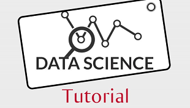
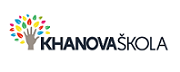

Vzdělávání
Koho opravdu zajímá data science a chce v něm něco dokázat, ten se bude celý život vzdělávat

Aby vás učení bavilo a bylo pro vás užitečné, musí být kvalitní a zábavné.
Kde se učit kvalitně
Uvádím několik vybraných webů, kde se učím já. Obsahem, podáním a kvalitou mi vyhovují. Pokud vám vyhovovat nebudou, napište Googlovi.
|  | ||
EkoFunje vzdělávací web zaměřený na ekonomii a jsou zde pro nás velice dobře udělané kurzy o matematice, statistice a ekonometrii. |
Khanova školaje klasika - pro nás matematika, statistika a SQL databáze. Nyní jsou vybrané kurzy v češtině. |
edXje jedna z nejznámejších MOOC platforem. |
| Coursera je jedna z nejznámejších MOOC platforem. | Analytics Vidhya - mnoho praktických kurzů. | YouTube obsahuje dny, měsíce a roky videí o počítačích, programování, matematice, statistice a data science. Kvalita je různá. |
| DataCamp je edukativní web zaměřený výhradně na data science. Vyučuje jazyky R a Python od základu až po velice odborné záležitosti z oblasti machine learning, data analysis, data visualisation a další. Kurzy jsou placené. Platí se měsíční nebo roční předplatné. Bežná roční cena je 300USD a nejméně 2x za roke je možné nakoupit i za 149USD. |